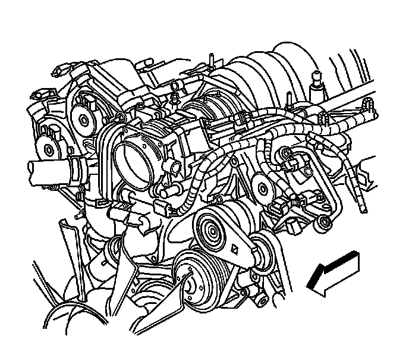
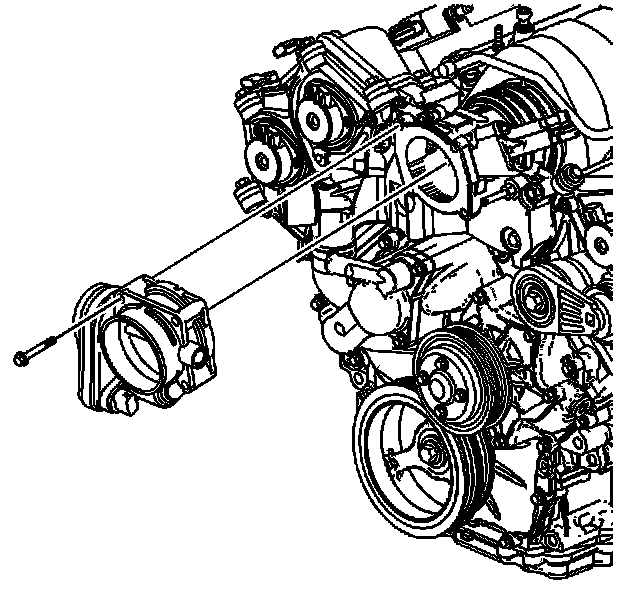

Removal and Replacement
Throttle Body Assembly Replacement
Removal Procedure

1. Remove the fuel injector sight shield. Refer to Fuel Injector Sight Shield Replacement (Service and Repair) .
2. Remove the air cleaner outlet duct. Refer to Air Cleaner Outlet Duct Replacement (Service and Repair) .
3. Disconnect the electrical connector from the throttle body assembly.

4. Remove the throttle body assemble mounting bolts.
5. Remove the throttle body and throttle body gasket from the water housing.
6. Discard the throttle body gasket.
Installation Procedure
Notice: Do not use a cleaner which contains methyl ethyl ketone. This extremely strong solvent may damage components and is not necessary for this type of cleaning.
Use a carburetor cleaner in order to remove deposits.
Refer to the instructions provided with the cleaner.
Important: Do not reuse the old throttle body gasket.
1. Install the NEW gasket to the throttle body assembly.
2. Install the throttle body assembly to the water housing.
Notice: Refer to Fastener Notice .
3. Install the throttle body assembly mounting bolts.
Tighten the bolts to 10 N.m (89 lb in).
4. Connect the electrical connector to the throttle body assembly.
5. Install the air cleaner outlet duct. Refer to Air Cleaner Outlet Duct Replacement (Service and Repair) .
6. Install the fuel injector sight shield. Refer to Fuel Injector Sight Shield Replacement (Service and Repair) .